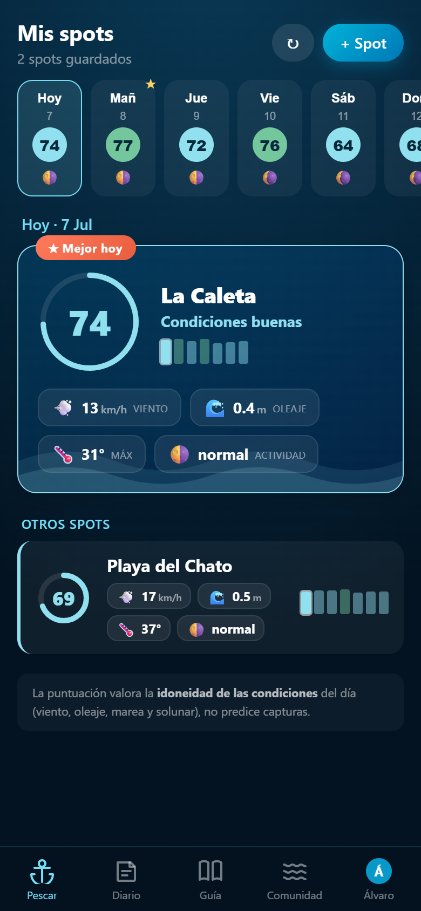
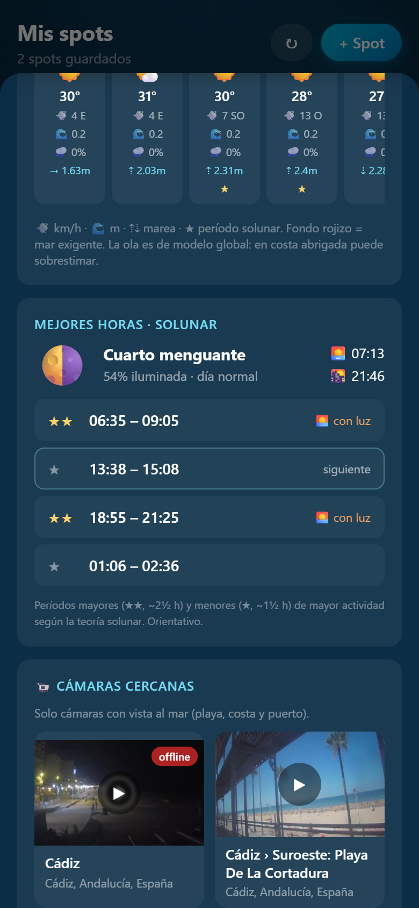
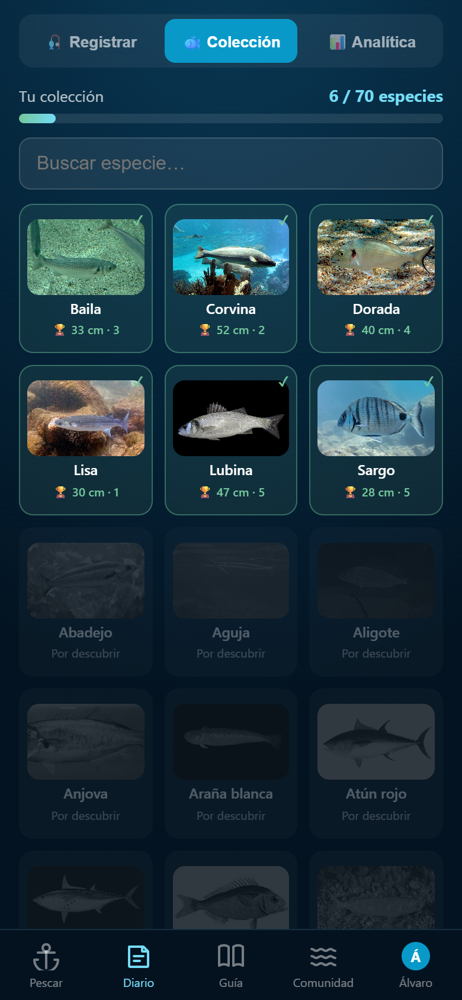
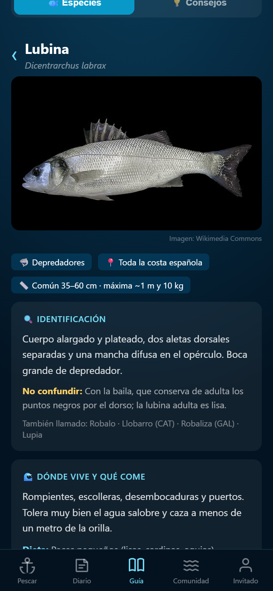
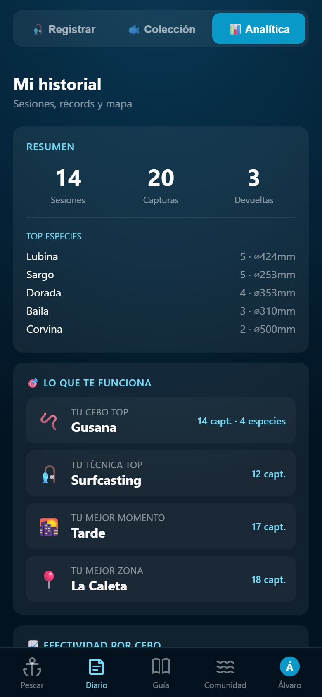
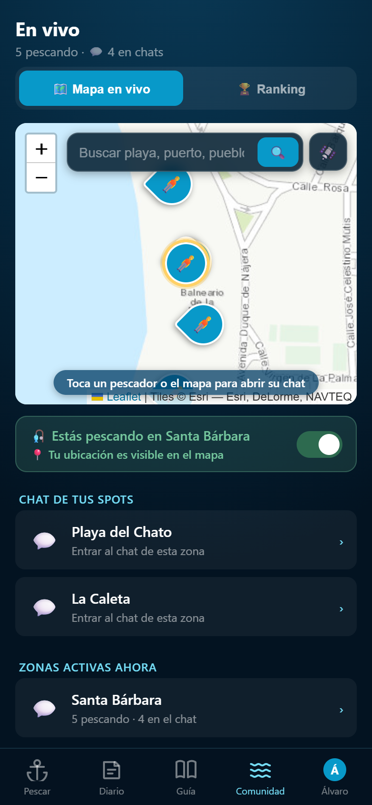
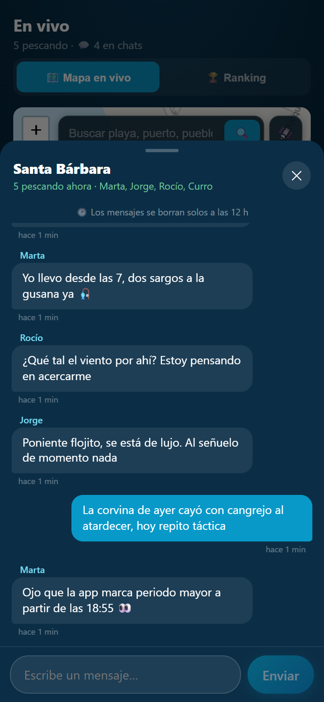
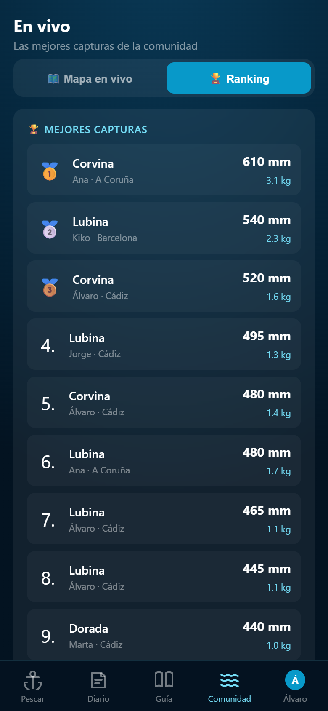
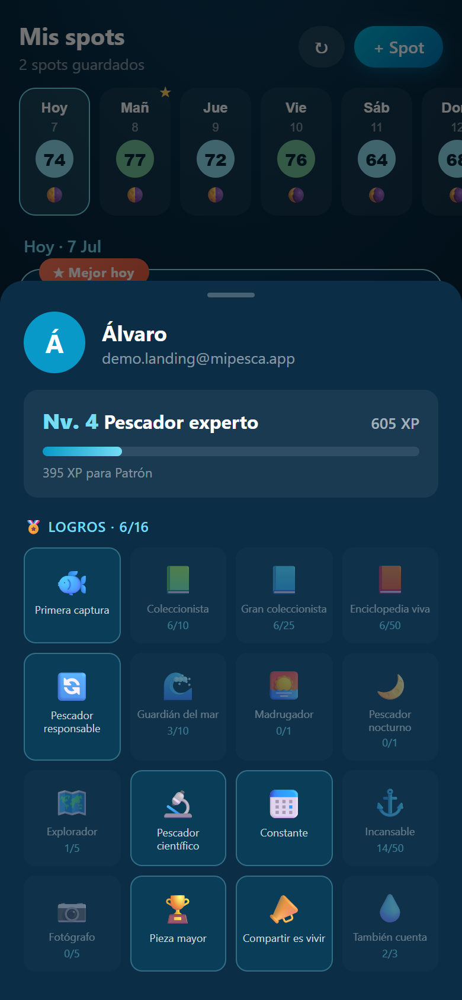

Guarda tus spots y asegúrate las mejores condiciones para tu jornada
Solunar, meteo y mareas de tu zona en una sola puntuación. Elige el mejor día para pescar en España — gratis.
Funciona en el móvil, sin instalar nada. Cuenta gratuita opcional.

Así funciona
Baja: la pantalla cambia contigo. Capturas reales de la app.








Guarda tus spots y mira la puntuación
Solunar, viento, oleaje y mareas en un número de 0 a 100 por spot y por día.
Pestaña PescarMira el mar antes de salir
Cámaras de playa en directo y horas solunares de cada spot, antes de coger el coche.
Cámaras en directoApunta capturas, completa tu colección
Cada salida suma a tu diario y desbloqueas especies como en una Pokédex.
Diario + colecciónApréndelo todo de cada especie
Enciclopedia de 70 especies: identificación, hábitat, cebos, técnicas y hasta cómo cocinarlas.
Guía del pescadorDescubre lo que te funciona
Tu cebo, técnica, momento y zona top — calculados de tus propias capturas.
Analítica personalMira quién pesca cerca
Como Waze, pero de pesca: haz check-in y verás a los demás pescadores en el mapa en tiempo real.
Mapa en vivoCharla con los de tu zona
Cada playa tiene su chat: cómo va la jornada, qué cebo funciona, cómo sopla el viento.
Chat de la playaComparte y compite
Presume de tus mejores piezas en el ranking de la comunidad. ¿Aguantará tu récord?
RankingSube de nivel
Todo lo que registras suma XP: asciende de Grumete a Leyenda del mar y desbloquea 16 insignias.
Niveles e insigniasTodo en cuatro pestañas
Pescar
Puntuación diaria por zona, cámaras en directo y vista satélite para ver el fondo.
Arena o rocaDiario
Tus capturas, tu colección de especies y tu analítica personal.
Estilo PokédexGuía
Enciclopedia de 70 especies (identificación, cebos, técnicas), tallas legales y 32 artículos de consejos. Sin cuenta.
70 especiesComunidad
Ranking, mapa en vivo y niveles mientras pescas.
Niveles y logros¿Sabías que…?
Seis de los datos que te esperan en la Guía. Hay uno por cada una de las 70 especies.
Hay un pez alucinógeno en tu playa
En raras ocasiones la carne de la salpa provoca alucinaciones, según lo que haya comido. En la antigua Roma se usaba con fines «recreativos».
Salpa · Sarpa salpaEl pez más venenoso de Europa vive donde te bañas
La araña o faneca brava pasa el día enterrada en la arena. Su picadura es la lesión de pesca más común del verano español.
Araña blanca · Trachinus dracoTres corazones y nueve cerebros
El pulpo tiene un cerebro central y uno por brazo. Abre frascos, resuelve laberintos y reconoce caras: el invertebrado más listo del mar.
Pulpo · Octopus vulgarisEsconde una segunda mandíbula
La morena lanza una boca faríngea hacia delante para arrastrar la presa hacia dentro. Los romanos ya las criaban en viveros como manjar.
Morena · Muraena helenaLleva 100 millones de años pescando con caña
El rape usa un señuelo propio (el ilicio) sobre el morro para atraer a sus presas. Inventó la pesca mucho antes que nosotros.
Rape · Lophius piscatoriusUn ojo que emigra por la cabeza
El lenguado nace con un ojo a cada lado, como un pez normal. A las pocas semanas uno viaja por el cráneo hasta juntarse con el otro.
Lenguado · Solea soleaCada ficha trae además identificación, hábitat, cebos, técnicas, talla legal y cómo cocinarla. Abrir la Guía gratis ↗
Las mejores horas para pescar, calculadas para tu zona
La teoría solunar predice los picos de actividad de los peces según la luna y el sol — periodos mayores y menores. MiPesca los cruza con la meteorología marina y las mareas de tu zona, y lo resume en una puntuación de 0 a 100.
Zonas de costa españolas y tallas mínimas legales por especie, calculado para el punto exacto donde mojas el sedal: spinning, surfcasting o corcheo.
Preguntas frecuentes
¿Cuáles son las mejores horas para pescar hoy?
Cambia cada día y por zona: abre MiPesca, elige tu zona y verás las horas de mayor actividad de hoy y los próximos días.
¿Qué es el calendario solunar y funciona de verdad?
Relaciona la actividad de los peces con la luna y el sol; cruzado con meteo y mareas, es la mejor referencia para decidir cuándo salir.
¿Es gratis? ¿Necesito cuenta?
La predicción y la guía son de consulta libre, sin registro. Con una cuenta gratis desbloqueas diario, colección y comunidad.
¿Sirve para río y embalse o solo para el mar?
Pensada sobre todo para la costa, pero los periodos solunares también te orientan en ríos y embalses.
¿Funciona sin conexión?
Sí: guarda los datos de tu zona y sincroniza al recuperar cobertura.
La próxima salida, con ventaja
Consulta la predicción de tu zona en menos de un minuto. Sin instalar nada, sin registro.
Abrir MiPesca gratis